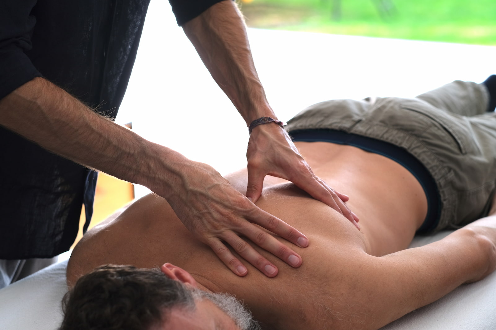

The Grinberg Method™
A body-based approach to lasting change

A learning process conducted through the body.
The Grinberg Method is based on a simple but profound observation: that much of what limits us — physically and emotionally — lives not in our thinking, but in the body. In patterns of tension, resistance, and reaction that we repeat automatically, often without realising.
These patterns often begin as responses to past experiences — pain, fear, stress, difficulty. Over time they become fixed, running on autopilot, shaping how we interpret and respond to the present. People can find themselves walking in circles, wondering why the same things keep happening.
This work uses touch, breath, movement and attention to help you become aware of those patterns — and to learn, through direct physical experience, how to respond differently.
It is not treatment in the conventional sense. It is a learning process, conducted through the body.
A different kind of intervention.
Unlike massage, this is not a passive experience. You are invited to feel, notice, breathe and respond. The learning that happens during the session is as important as any physical release.
Unlike talking therapy, the entry point is the body itself — sensation, tension, breath, movement — rather than narrative or analysis. The result is a kind of change that can feel surprisingly direct: less filtered through the thinking mind, more immediate.
This work may help
if you’re experiencing:
- Chronic tension or recurring pain
- Stress, anxiety or difficulty switching off
- Emotional overwhelm or patterns that feel stuck
- Difficulty relaxing, even when you want to
- Feeling disconnected from your body or yourself
- A sense that the same reactions keep running, whatever you try
Sessions are one-to-one and unhurried.
Sessions last 50–60 minutes. We begin with a short conversation about what you’re bringing — physically, emotionally, or both. The bodywork itself involves guided touch, breath and movement, with verbal guidance throughout.
Most people find the first session both unfamiliar and surprisingly straightforward. The work meets you where you are.
Working with intensity.
Sessions sometimes involve moments of physical pressure or discomfort. This is intentional, but it is not about endurance.
Many of our habitual patterns — how we tense, brace, or disconnect — are ultimately responses to pain or fear, often from experiences long past. By working with discomfort consciously and with awareness, it becomes possible to observe those reactions and begin to respond differently.
The aim is never suffering. Intensity, when present, is always in service of learning.
Testimonial copied for demonstration only.
“I experienced a deep release which didn’t make rational sense to my thinking mind, but left my body and being feeling lighter and clearer.”— Client
Book an introductory session.
Introductory session, £55 for 60 minutes. Sessions thereafter £75. Central London.
Book a Session